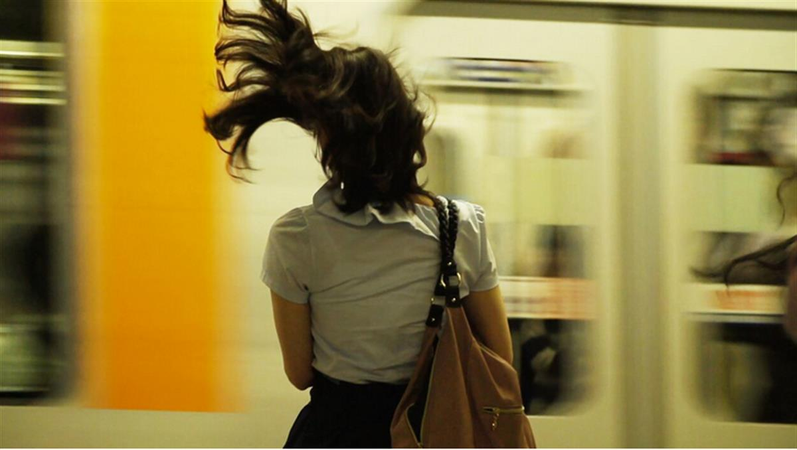
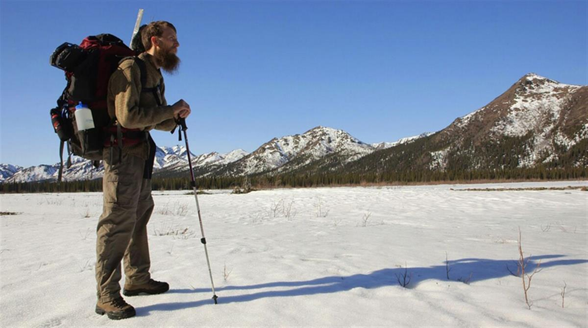

“I am undone by this film… it lands in the mind, at least to this reviewer, with an impact reminiscent of seeing 1982’s Koyaanisqatsi for the first time… Shen’s In Pursuit of Silence incessantly inspires and sometimes takes the breath away and can even accomplish both at once.” -Austin Chronicle
Beginning with an ode to John Cage’s seminal silent composition 4’33”, the sights and sounds of this film delicately interweave with silence to create a contemplative and cinematic experience that works its way through frantic minds and into the quiet spaces of hearts. As much a work of devotion as it is a documentary, In Pursuit of Silence is a meditative exploration of our relationship with silence and the impact of noise on our lives. From the Desert Fathers and mothers of the third century AD who became a model for early Christian monasticism to John Cage’s 4’33” which would go onto inspire a generation of artists, humankind has had a long fascination with silence. Yet in our race towards modernity, amidst all the technological innovation and the rapid growth of our cities, silence is now quickly passing into legend. From causing aggressive behavior to hundreds of thousands of heart attacks around the world, there is no aspect of human life that noise does not infringe upon. Silence as a resource for respite and renewal from the sensory onslaught of our modern lives is now more important than ever before.
“Replete with imagery that shimmers with the kind of almost otherworldly wonder one might associate with a Terrence Malick movie… This film does more than just tell a story, it testifies to the sheer loveliness of anything — everything — when drenched in silence.”
-The Huffington Post


THE FILMMAKERS:
Director: Patrick Shen
Producers: Andrew Brumme, Patrick Shen, Brandon Vedder
Cinematographers: Patrick Shen, Brandon Vedder
Edited by: Patrick Shen
SOURCE: IN PURSUIT OF SILENCE